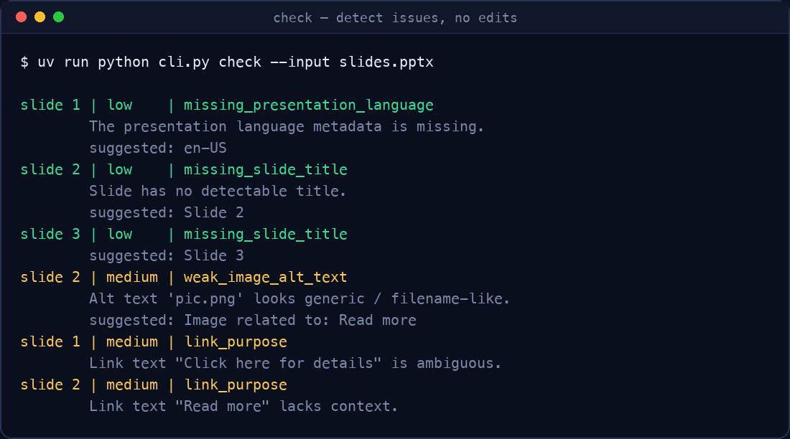
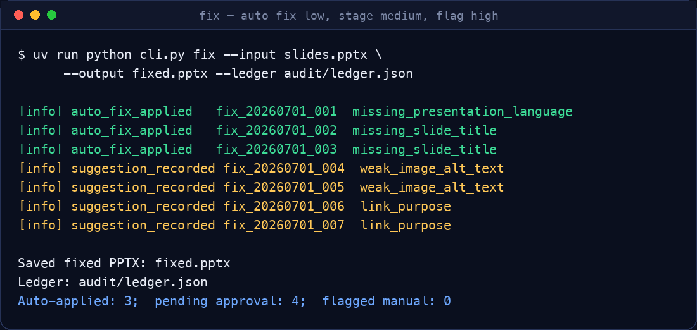

From checking to fixing
PowerPoint accessibility
A human-in-the-loop CLI that detects accessibility issues, auto-fixes what's safe, suggests fixes for review, and flags the rest — every action logged in a full audit ledger with per-item rollback.
Accessible slides are expensive and inconsistent
Built-in checkers catch most issues but explicitly not all, and manual remediation services put large-scale compliance out of reach for schools and public institutions.
per page charged by private remediation services
ADA Title II Phase 1 compliance deadline
of actions captured in a reversible audit trail
Every issue is triaged before any action
Risk classification decides whether a fix is applied automatically, proposed for approval, or flagged for a human.
Auto-fixed
Deterministic, structural, no content judgment needed — fixed automatically and logged.
- Missing slide titles
- Generic link text ("click here")
- Missing language metadata
- Duplicate slide titles
Suggested → you approve
Needs context, but a good fix can be drafted. Staged as pending_approval until a human decides.
- Missing / auto-generated alt text
- Filename-like alt text
- Inferred reading order
- Contrast near a compliant color
Flagged for a human
Requires understanding of meaning and intent. Described in plain language with WCAG guidance — no auto edit.
- Complex charts & diagrams
- Color-as-only-differentiator
- Meaning-sensitive text
- Nested tables, embedded media
Built for trust and accountability
Nothing changes silently. Every fix is snapshotted, logged, and reversible.
Rule-based detection
One module per WCAG / Section 508 check, returning structured findings mapped to specific criteria.
Safe auto-fix
Low-risk issues repaired atomically — placeholder titles, normalized links, injected language metadata.
Human-in-the-loop review
Approve, edit, or reject each medium-risk suggestion in an interactive CLI. Your wording wins.
Itemized audit ledger
Every detected issue produces one append-only JSON entry with criterion, risk, status, and timestamps.
Per-item rollback
Any applied fix reverts independently from its before/after snapshot — no chained dependencies.
Exportable reports
Generate an XLSX audit spreadsheet (one row per item) and a PDF summary for stakeholders.
A clear four-step pipeline
Run end-to-end, or stop after any stage. The ledger ties it all together.
check
Scan the deck and report every issue — no edits made.
fix
Auto-fix low risk, stage medium, flag high — all recorded.
report
Review pending suggestions: approve, edit, or reject.
export
Produce XLSX / PDF audit reports — or roll anything back.
Real output from the CLI
Actual results from running AccessiSlides on a sample deck — issues detected, then triaged and remediated.


Up and running in minutes
AccessiSlides uses uv for environments and installs —
no pip or manual venv needed. It runs fully offline;
the optional LLM layer for smarter alt-text is off by default.
# 1. Install uv (once per machine) curl -LsSf https://astral.sh/uv/install.sh | sh # 2. Set up the environment uv sync # 3. Check a deck (report only) uv run python cli.py check --input slides.pptx # 4. Fix: auto-fix low, stage medium, flag high uv run python cli.py fix \ --input slides.pptx \ --output fixed.pptx \ --ledger audit/ledger.json # 5. Human review, then export the audit uv run python cli.py report --ledger audit/ledger.json --pptx fixed.pptx --review uv run python cli.py export --ledger audit/ledger.json --format pdf --output summary.pdf
One ledger entry per issue
Whether fixed, suggested, or flagged — every issue is accounted for and traceable.
{
"item_id": "fix_20260701_001",
"slide_number": 3,
"element_type": "image",
"wcag_criterion": "1.1.1 Non-text Content",
"section_508_ref": "E205.4",
"risk_level": "medium",
"issue_description": "Image has no alt text",
"suggested_fix": "Diagram showing Q3 revenue by region",
"status": "pending_approval",
"applied_at": null,
"rolled_back_at": null
}
Make every slide accessible — at scale
Lower the cost and complexity of PowerPoint remediation so schools, public institutions, and nonprofits can meet WCAG and Section 508 without expensive third-party services.